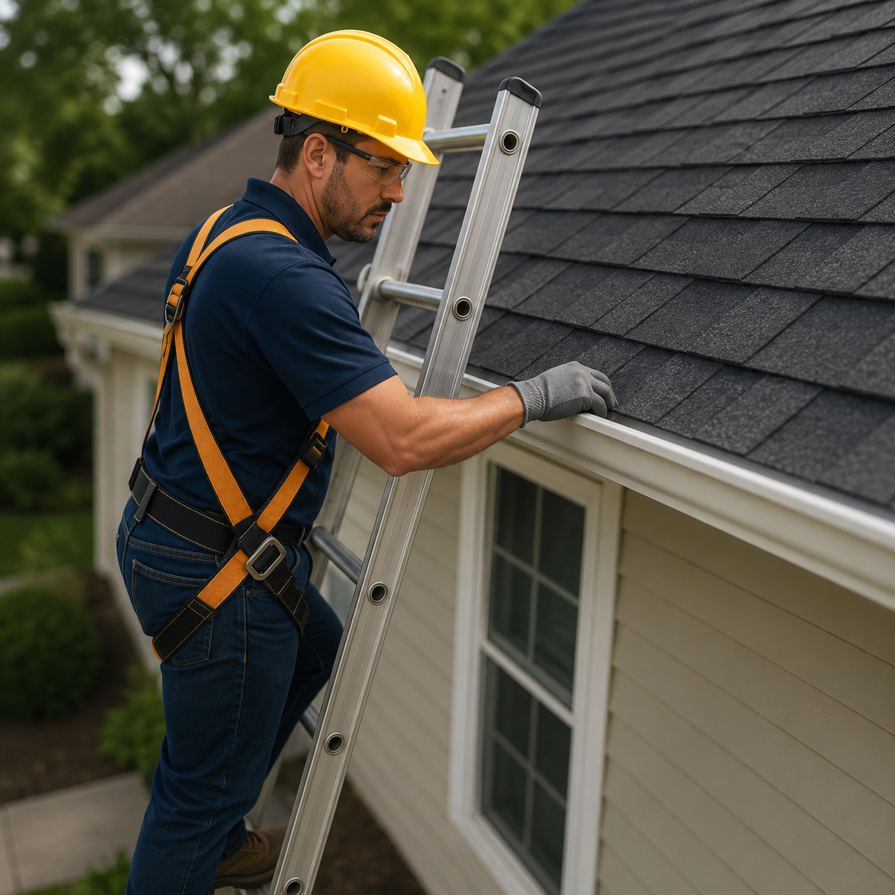
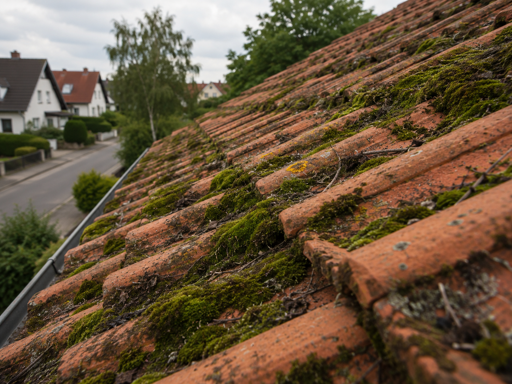

Kleine Schäden früh erkennen, bevor sie teuer werden – jährlicher Dach-Check, Dachrinnenreinigung und Wartungsvertrag.
Viele Dachschäden entstehen schleichend: ein loser Ziegel, eine verstopfte Rinne, Moos das Feuchtigkeit speichert. Von innen bemerken Sie das erst, wenn Wasser ins Haus eindringt – und dann ist der Schaden längst deutlich größer als nötig.
Der jährliche Dach-Check von [FIRMENNAME] erkennt solche Probleme früh. Wir prüfen Eindeckung, Anschlüsse und Rinnen – und geben Ihnen einen schriftlichen Befund mit Empfehlungen.
Prüfung auf defekte, verrutschte oder fehlende Ziegel, Dachsteine oder Schindeln. Moos- und Algenbewuchs.
First, Grat, Kehle, Schornstein, Gauben – alle kritischen Übergangsstellen werden kontrolliert.
Laub und Schmutz werden entfernt, Gefälle und Dichtigkeit der Rinnen geprüft.
Was ist in Ordnung, was sollte in den nächsten 1–2 Jahren behoben werden – klar und ehrlich.
Der ideale Zeitpunkt ist vor der Heizperiode (September/Oktober), damit das Dach winterfest ist. Wir prüfen Eindeckung, Anschlüsse, Rinnen und sichtbare Teile der Dachkonstruktion.
Befund und Empfehlungen erhalten Sie schriftlich – so haben Sie eine Dokumentation für Versicherungen oder beim Hausverkauf.

Moos und Algen speichern Feuchtigkeit und schädigen Dachziegel langfristig. Die Poren des Materials werden aufgeweicht, Fröste vergrößern die Schäden – das verkürzt die Lebensdauer der Eindeckung deutlich.
Wir entfernen Bewuchs schonend – ohne aggressiven Hochdruckreiniger, der die Oberfläche beschädigt. Optional: Biozid-Behandlung zur Vorbeugung für mehrere Jahre.

Mit dem Wartungsvertrag von [FIRMENNAME] kümmern wir uns jedes Jahr automatisch um Ihren Dach-Check und die Rinnenreinigung. Sie erhalten rechtzeitig einen Terminvorschlag – ohne dass Sie selbst daran denken müssen.
Einmal abschließen – dauerhaft entspannt sein. Unser Wartungsvertrag ist jährlich kündbar.
Einmal jährlich – idealerweise im Herbst vor der Heizperiode. So wird das Dach winterfest gemacht und Probleme werden erkannt, bevor Frost und Nässe sie verschlimmern.
Der Preis hängt von der Dachgröße und dem Umfang (reine Sichtprüfung, mit Rinnenreinigung, mit Moosentfernung) ab. Kontaktieren Sie uns – wir nennen Ihnen einen konkreten Preis nach einer kurzen Beschreibung Ihres Dachs.
In der Regel: jährlicher Dach-Check (Sichtprüfung aller wesentlichen Elemente), Dachrinnenreinigung und schriftlicher Befund. Den genauen Umfang legen wir gemeinsam bei Vertragsabschluss fest.
Nein. Für die Außenprüfung brauchen wir keinen Zugang zu Ihren Wohnräumen. Den schriftlichen Befund schicken wir Ihnen per E-Mail.